A programação orientada a objetos é um modelo de programação onde diversas classes possuem
características que definem um objeto na vida real. Cada classe determina o comportamento do
objeto definido por métodos e seus estados possíveis definidos por atributos. São exemplos
de linguagens de programação orientadas a objetos: C++, Java, C#, Object Pascal, entre
outras.
Este modelo foi criado com o intuito de aproximar o mundo real do mundo virtual.
Para dar suporte à definição de Objeto, foi criada uma estrutura chamada Classe, que reúne
objetos com características em comum, descreve todos os serviços disponíveis por seus
objetos e quais informações podem ser armazenadas.
×
Características
A programação orientada a objetos (POO) é um paradigma de programação que se baseia em
conceitos de objetos e classes. Aqui estão algumas características importantes da POO:
Classes e Objetos: A POO organiza o código em classes, que são modelos para criar
objetos. As classes definem os atributos (dados) e métodos (comportamentos) que os
objetos podem ter.
Mensagens e Comunicação: A comunicação entre objetos ocorre por meio do envio
de mensagens. Os objetos interagem uns com os outros chamando métodos.
Associação: As classes podem estar associadas umas com as outras, indicando
relacionamentos entre objetos. Isso pode ser feito através de associações de um para um,
um para muitos e muitos para muitos.
Políticas de Acesso: A POO permite definir regras de acesso aos dados e
comportamentos dos objetos, determinando quem pode acessar e modificar esses elementos.
Essas são algumas das principais características da programação orientada a objetos,
que é amplamente usada em muitas linguagens de programação, como Java, C++, Python e C#.
Ela promove a modularidade, a reutilização de código e o desenvolvimento de software
mais organizado e compreensível.
×
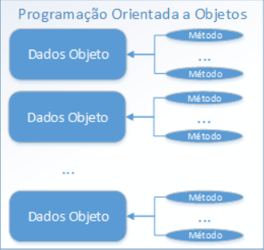
Pilares
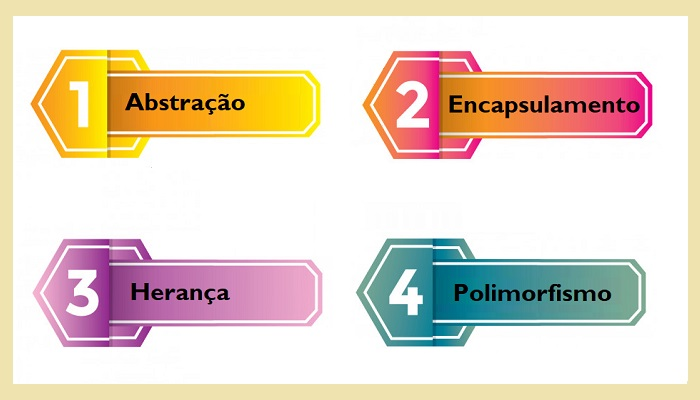
Abstração: significa "esconder" partes da implementação do objeto expondo
apenas uma interface simples para seu uso. Pense por exemplo num forno de micro-ondas,
você não precisa entender toda a complexidade de como os componentes internos trabalham
para gerar as ondas e produzir calor, você quer apenas apertar um ou dois botões e ter
uma refeição quente pra comer. Toda essa complexidade são detalhes de implementação,
você não precisa conhecê-los.
Encapsulamento: Encapsulamento se refere à construção do objeto de modo a
proteger o acesso direto a seus dados internos. Ao encapsularmos um objeto estamos
agrupando propriedades e métodos que estão diretamente relacionados dentro de um mesmo
objeto, permitindo que essas propriedades sejam acessadas apenas através de métodos
públicos. Desta forma tratamos de questões importantes como segurança e confiabilidade
do estado do objeto.
Herança: As classes suportam o recurso herança, característica comum na orientação a objetos onde uma classe pode herdar comportamentos e características de outra classe. Vemos então que não só alguns atributos como também alguns mecanismos (ou métodos, traduzindo para POO) mudam.
Quando dizemos que uma classe A é um tipo de classe B, dizemos que a classe A herda
as características da classe B e que a classe B é mãe da classe A, estabelecendo então
uma relação de herança entre elas.
×
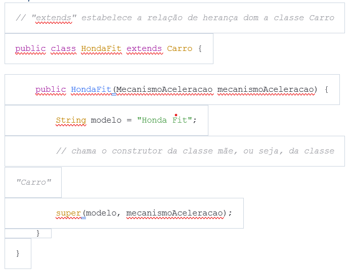
Polimorfismo: O polimorfismo permite que objetos de diferentes classes sejam
tratados de maneira uniforme. Isso ocorre através do uso de interfaces, classes
abstratas e métodos polimórficos.
×
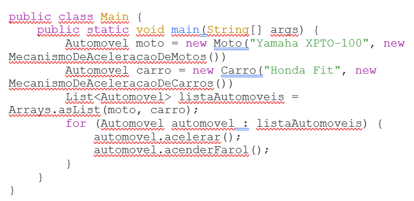
Atributos
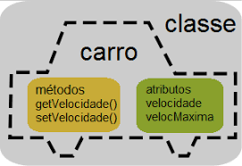
Atributos são as características de um objeto, essas características também são conhecidas como variáveis, utilizando o exemplo dos cães, temos alguns atributos, tais como: cor, peso, altura e nome.
×
Métodos
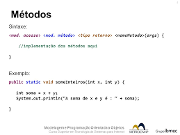
Além das características, outra coisa que identifica os seres humanos são suas ações;
correr, comer, beber, dormir, falar, etc… Estas ações na orientação a objetos chamamos
de métodos.
Podemos entender que os métodos são as ações da classe, o que exatamente a classe
irá fazer. Em resumo, são as tarefas, ações que a classe pode executar. Criando os Métodos da Classe: Por exemplo, quando criado um método com a ação de
depositar um valor para uma conta bancária, dentro desse método são incluídas as ações
que irão retornar algum valor, trabalhar em uma variável ou até mesmo chamar outro
método já criado.
×
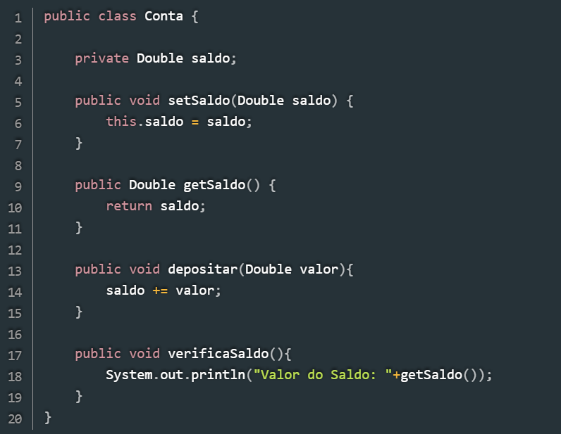
Pacotes
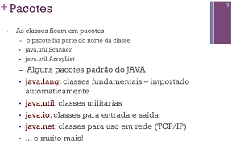
Pacote em Java é um mecanismo para encapsular um grupo de classes, subpacotes e
interfaces. Os pacotes são usados para:
Prevenindo conflitos de nomenclatura, ou seja, pode haver classes com nomes iguais,
porém em pacotes diferentes.
Facilitando a pesquisa/localização e o uso de classes, interfaces, enumerações e
anotações.
Fornecendo acesso controlado: protegido e padrão tem controle de acesso de nível de
pacote. Um membro protegido é acessível por classes no mesmo pacote e suas subclasses.
Um membro padrão (sem nenhum especificador de acesso) pode ser acessado apenas por
classes no mesmo pacote.
Os pacotes podem ser considerados como encapsulamento de dados (ou ocultação de dados).
Tudo o que precisamos fazer é colocar classes relacionadas em pacotes. Depois disso,
podemos simplesmente escrever uma classe de importação de pacotes existentes e usá-la em
nosso programa. Um pacote é um contêiner de um grupo de classes relacionadas onde
algumas das classes são acessíveis são expostas e outras são mantidas para fins internos.
Podemos reutilizar classes existentes dos pacotes quantas vezes precisarmos em nosso programa.
Implementação de pacotes em classes: Podemos adicionar mais classes a um pacote criado usando o nome do pacote na parte superior do programa e salvando-o no diretório do pacote. Precisamos de um novo arquivo java para definir uma classe pública, caso contrário, podemos adicionar a nova classe a um arquivo .java existente e
recompilá-lo.
×
Interface Java
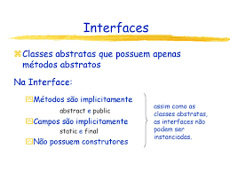
A interface é uma classe abstrata completamente usada para agrupar
métodos relacionados com corpos vazios.
Por fim, interface nada mais que uma espécie de contrato de regras que uma classe deve seguir em um determinado contexto. Como em Java não existe herança múltipla, a interface passa a ser uma alternativa.
Para acessar os métodos da interface, a interface deve ser "implementada" (como se fosse herdada) por outra classe com a implementada palavra-chave
(em vez de extends). O corpo do método de interface é fornecido pela classe "implementar".
×
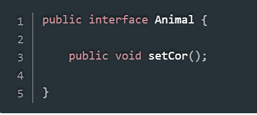
Enumeração
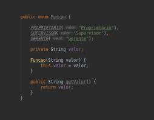
Uma enumeração, ou Enum, é um nome simbólico para um conjunto de valores. As
enumerações são tratadas como tipos de dados e você pode usá-las para criar
conjuntos de constantes para uso com variáveis e propriedades.
As enumerações
tornam o código mais claro e mais legível, especialmente quando são usados nomes
significativos. Os benefícios da utilização de enumerações são: Reduz erros causados
pela transposição ou digitação incorreta de números. Torna mais fácil alterar
valores no futuro.
×
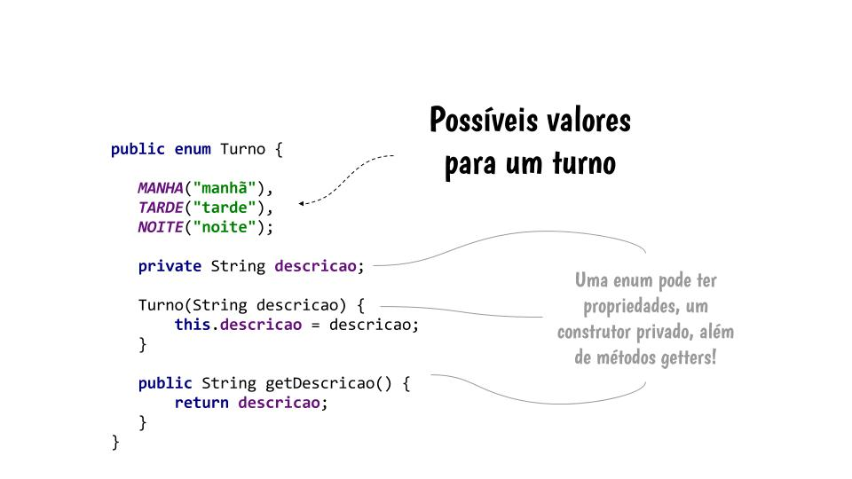
Serialização de Objetos Java
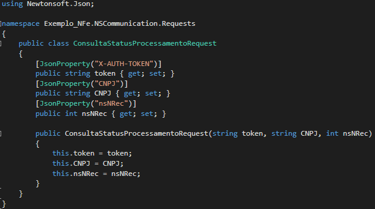
A serialização é quando um objeto é transformado, em uma cadeia de bytes e desta forma pode ser manipulado de maneira mais fácil, seja através de transporte pela rede ou salvo no disco. Possibilitará capturar o estado do objeto ou a estrutura de dados, e transformar em uma cadeia de bytes quando for necessário.
×
Relacionamento de Objetos
O relacionamento entre objetos define como eles vão interagir ou colaborar para executar uma operação em uma aplicação. Em qualquer aplicação, objetos de classes de interface do usuário vão interagir com objetos da camada de negócios para executar uma operação. Agregação:
Forma de composição em que o objeto composto apenas usa ou tem conhecimento da existência do(s) objeto(s) componente(s). Os objetos componentes podem existir sem o agregado e vice-versa.
Composição:
Forma de associação em que o objeto composto é responsável pela existência dos componentes. O componente não tem sentido fora da composição.